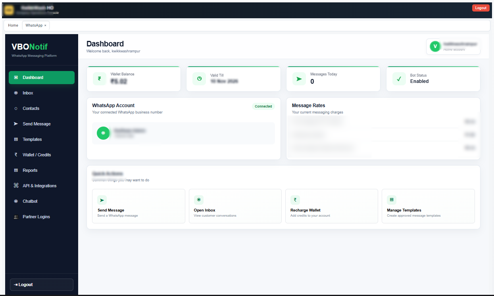
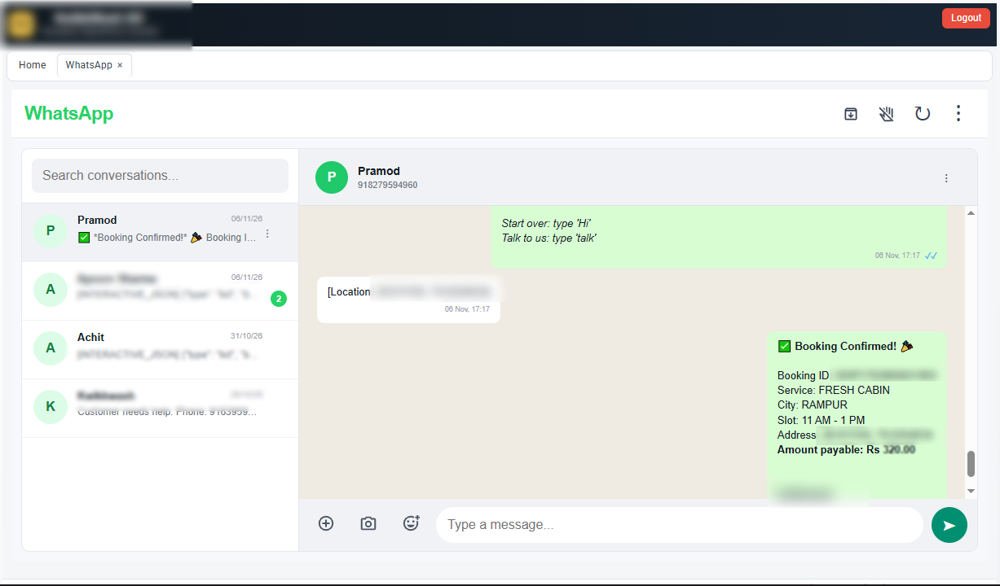

One number, multiple users
Work together from a shared WhatsApp inbox so customer conversations are easier to manage across team members.
Turn business conversations into an organized customer support and communication workflow. Give multiple team members access to a shared inbox, route enquiries to the right area team and automate routine replies.
Request a WhatsApp DemoFlexible, usage-based messaging and custom business plans. Pricing depends on setup and message category.
Real VBONotif screens showing the operations dashboard and shared WhatsApp inbox.


Work together from a shared WhatsApp inbox so customer conversations are easier to manage across team members.
Guide enquiries to the relevant city, area or partner through chatbot routing and human handoff workflows.
Build visual conversation flows, answer routine questions and integrate eligible workflows with your business systems.
Manage WhatsApp templates, contacts and contact groups, and schedule business messages subject to Meta platform rules.
Review messages, handle attachments and maintain organized customer interactions.
Use reporting, messaging history and wallet usage tools to keep communication costs and activity visible.
Set up the appropriate messaging, routing and integrations for your ISP, service business or multi-area team.
WhatsApp Business Platform setup, eligible conversation windows, templates, messaging charges and integration options depend on your configuration and applicable Meta requirements. No message-delivery outcome is guaranteed.
VBO supports a shared team inbox that can be configured for multiple users to manage conversations through one business WhatsApp account.
Yes. Area-based routing and human handoff workflows can help guide enquiries to the appropriate team or partner where configured.
Yes. The system provides a visual flow builder with menus, questions, conditional paths, API calls and human-agent handoff.
Pricing is tailored to your configuration and message category. We explain applicable messaging rates, platform or setup charges, and any integration costs before activation.
VBO supports scheduled messaging and WhatsApp template management. Template approval, eligible recipients, applicable rules and delivery depend on the WhatsApp Business Platform.
Yes. The system supports contact management and groups, helping authorised staff organise communication workflows.
Tell us about your message volume, team size, service areas and required integrations. We can help scope the right solution.
Request a Personalized Demo